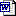

|
MISS-ABMS 2015
Ecole d'été internationale & multi-plateforme
sur la modélisation & la simulation multi-agent
appliquées à la gestion des ressources renouvelables
Montpellier, Agropolis International, du 17 au 28 août
2015
Contenu
Les sessions du matin prendront la forme de séances collectives
au cours desquelles les principes de la conception, de l'implémentation
et de la simulation de modèles multi-agents seront enseignés.
Des points spécifiques seront approfondis selon les attentes et
demandes des participants. Les sessions de l'après-midi seront
consacrées à des travaux personnels: les participants recevront
un appui de la part des formateurs dans le développement et la
mise au point de leur propre modèle multi-agent.
Outils
Des temps spécifiques d'apprentissage du langage graphique UML
ainsi que d'introduction aux plateformes Cormas,
Gama
et NetLogo
(sur la base d'une démonstration d'un même modèle)
seront proposés. Il est demandé aux participants d'indiquer
dans la fiche d'inscription (cf. ci-dessous) laquelle de ces trois plateformes
ils se destinent à utiliser lors des séances de travail
sur les projets personnels, afin de faciliter l'organisation de ces séances
d'appui personalisé.
Formateurs
Géraldine Abrami, Bruno Bonté (Irstea), Pierre Bommel,
François Bousquet, Jean-Pierre Müller (CIRAD), Patrick Taillandier
(Univ. Rouen), Benoît Gaudou (Univ. Toulouse).
Inscription
Compléter et renvoyer la fiche 
aux organisateurs
avant le 15 juin 2015.
Frais pédagogiques
- Etudiants: 650 €
- Chercheurs: 1250 €
Ces frais d'inscriptions incluent les repas du midi, pauses café/thé
ainsi qu'un repas de gala. Les frais d'hébergement, de repas du
soir et de transport sont à la charge des participants.
Pour toute demande d'information supplémentaire, contacter les
organisateurs
|